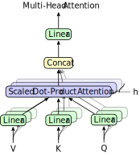
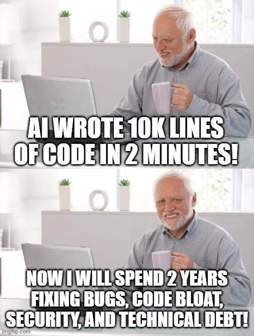

Plotly = require("plotly.js@2.35.2/dist/plotly.min.js");
minX = -5;
maxX = 5;
f = ([x1, x2]) => (x1**2 + x2 - 11)**2 + (x1 + x2**2 - 7)**2;
{
const linspace = d3.scaleLinear().domain([0, 49]).range([minX, maxX]);
const X1 = Array.from({length: 50}, (_, i) => linspace(i));
const X2 = Array.from({length: 50}, (_, i) => linspace(i));
// Define your function f here
const f = ([x1, x2]) => (x1**2 + x2 - 11)**2 + (x1 + x2**2 - 7)**2;
const Z = X1.map((x1,i) => X2.map((x2,j) => f([x1,x2])));
const data = [{
x: X1.flat(),
y: X2.flat(),
z: Z,
type: 'surface'
}];
const layout = {
// title: '',
autosize: false,
width: 400,
height: 400,
paper_bgcolor: "rgba(0,0,0,0)",
plot_bgcolor: "rgba(0,0,0,0)",
template: 'plotly_dark',
margin: {
l: 0,
r: 0,
b: 0,
t: 0
}
};
const div = document.createElement('div');
Plotly.newPlot(div, data, layout,{displayModeBar: false});
return div;
}Code Assistants
How Far We’ve Come & What’s Next
François-David Collin
CNRS
IMAG
Paul-Valéry Montpellier 3 University
History of code editors/assistants
History of code editor features, with a focus on the last three years (2022–2025) and the transformative impact of Large Language Models (LLMs):
Early Days: Text Editors
- 1960s–1970s:
vi(1976),Emacs(1976)
Basic text manipulation, macros, and syntax highlighting.

The Rise of IDEs
1980s–1990s: Turbo Pascal (1983), Visual Basic (1991)
- Integrated debugging
- project management
- basic autocompletion.
Modern Era: Powerful, Extensible IDEs
2000s: Visual Studio, Eclipse, IntelliJ IDEA
\Rightarrow Advanced autocompletion, refactoring, static analysis, and plugin ecosystems.
Modern Era: Powerful, Extensible IDEs (2)
2015: VSCode (based on Electron/Node.js)
\Rightarrow Lightweight, open-source, and extensible via marketplace.
The Language Server Protocol (LSP)
2016: Microsoft introduces the Language Server Protocol (LSP)
- Standardizes communication between editors/IDEs and language-specific servers.
- Enables features like autocompletion, go-to-definition, linting, and refactoring across many languages.
- Decouples editor development from language tooling.
The Language Server Protocol (LSP) (2)

LSP Architecture
Impact of LSP on Developer Experience
- Unified experience: VSCode, Vim, Emacs, Sublime Text, and more support LSP.
- Rapid adoption: Hundreds of languages now have LSP servers.
- Consistent, high-quality tooling regardless of editor.
- Paved the way for advanced features and easier integration of AI assistants.
The LLM Revolution (2022–2025)
2022: The Breakthrough Year
GitHub Copilot (June 2022)
First mainstream LLM-powered code assistant (OpenAI Codex).
Key features:
- Code generation from comments or snippets.
- Multi-language support (Python, JavaScript, Java, etc.).
2023: AI Becomes Ubiquitous
- GitHub Copilot X (March 2023)
- Integrated ChatGPT-4 for explanations, test generation, and PR reviews.
- New features:
- Natural language explanations of complex code.
- Automatic test generation.
- AI-assisted debugging.
2023: AI Becomes Ubiquitous (2)
- JetBrains AI Assistant
- Native integration in IntelliJ, PyCharm, etc.
- Collaboration tools:
- Copilot for Pull Requests, Amazon Q.
- VSCode forks:
- Cursor, Windsurf (by Codeium).
2024: The Rise of Autonomous Agents
Claude Code (Anthropic, 2024)
- Agentic capabilities: Executes tasks (file creation, commits, tests, PRs).
- Terminal integration: Works directly in the terminal.
- Holistic understanding: Cross-file refactors and dependency analysis.
- Security: Restrictions for risky commands:refs[1-6,9].

2024: The Rise of Autonomous Agents (2)
- GitHub Copilot Enterprise
- Customization for company codebases.
- Extended context (internal docs, Jira tickets).
- Advanced features:
- Multi-step agents.
- Real-time visualization (e.g., Artifacts in Claude).
2025: Maturation and Specialization
- Deep integration:
- VSCode: Native support for AI agents (Cline, Augment).
- JetBrains: Claude 3.5 and Mellum models:refs[3-4].
- Cursor/Windsurf: Popular AI-driven alternatives.
- New features:
- Multi-modal editing (code from diagrams, screenshots).
- Specialized agents for DevOps and security.
- Extreme customization and collaboration.
- Challenges:
- Technical debt from “black box” AI-generated code.
- IP concerns and performance issues.
Summary: Evolution of Code Editor Features (2022–2025)
| 2022 | LLM-powered code generation | GitHub Copilot, TabNine |
|---|---|---|
| 2023 | Explanations, tests, PR reviews | Copilot X, Amazon Q, JetBrains AI |
| 2024 | Autonomous agents, task execution | Claude Code, Copilot Enterprise |
| 2025 | Specialization, multi-modality | Cursor, Windsurf, Qodo, Continue |
Future Trends
| Trend | Benefits | Challenges |
|---|---|---|
| AI as Co-Pilot | Faster development, skill augmentation | Over-reliance, quality control |
| Self-Healing Editors | Fewer bugs, improved code quality | False positives, transparency |
| Low-Code/No-Code | Accessibility, rapid prototyping | Limited customization, maintenance |
| Regulation and Ethics | Safer, more transparent tools | Compliance complexity, global fragmentation |
A Paradigm Shift
- From manual editing → contextual assistance → AI co-creation.
- Challenge: Mastering tools without compromising quality or security.
A short detour to what is a LLM
AI domains
Artificial Intelligence (AI)
Machine Learning (ML)
Deep Learning (DL)
Large Language Models (LLM)
Train a neural network
Tanguy Lefort, 2023
Training a supervised Machine learning model
- Class of prediction functions f_\theta: linear, quadratic, trees
- Loss \mathcal{L}: L^2 norm, CrossEntropy, purity score
- Optimizer: SGD, Adam, …
- learning rate \eta: \theta_{k+1} \gets \theta_k - \eta \nabla_\theta \mathcal{L}
- other hyperparameters
- Dataset:
- training: \{(x_i, y_i)\}_{i} to compute loss between prediction f_{\theta}(x_i) and label y_i to update \theta
- test: only compute performance scores (no more updates !)
A quick survey of Deep Learning
Foreword, beware the Alchemy
More or less theoretical guarantees
- field of research
- type of network
- from theory to applications: a gap
Myriad of ad-hoc choices, engeenering tricks and empirical observations
Current choices are critical for success: what are their pros and cons?
Try \rightarrow Fail \rightarrow Try again is the current pipeline
The main ingredients
- Tensor algebra (linear algebra)
- Automatic differentiation
- (Stochastic) Gradient descent
- Optimizers
- Non-linearities
- Large datasets
Also, on hardware side:
- GPU
- Distributed computing
shape=(batch, height, width, features)
Tensor algebra
- Linear algebra operations on tensors
- MultiLayerPerceptron = sequence of linear operations and non-linear activations
\Rightarrow input can be anything: images, videos, text, sound, …
Automatic differentiation
- chain rule to compute gradient with respect to \theta
- key tool: backpropagation
- don’t need to store the computation graph entirely
- gradient is fast to compute (a single pass)
- but memory intensive
f(x)=\nabla\frac{x_{1}x_{2} sin(x_3) +e^{x_{1}x_{2}}}{x_3}
\begin{darray}{rcl} x_4 & = & x_{1}x_{2}, \\ x_5 & = & sin(x_3), \\ x_6 & = & e^{x_4}, \\ x_7 & = & x_{4}x_{5}, \\ x_8 & = & x_{6}+x_7, \\ x_9 & = & x_{8}/x_3. \end{darray}
Gradient descent
Example with a non-convex function
f(x_1, x_2) = (x_1^2 + x_2 - 11)^2 + (x_1 + x_2^2 - 7)^2
function grad_descent(x1,x2,step,max_iter) {
let grad = f_grad(x1, x2);
let iterations = [[x1, x2]];
function f_grad(x1, x2) {
let df_x1 = 2 * (-7 + x1 + x2**2 + 2 * x1 * (-11 + x1**2 + x2));
let df_x2 = 2 * (-11 + x1**2 + x2 + 2 * x2 * (-7 + x1 + x2**2));
return [df_x1, df_x2];
}
var count = 0;
while (count < max_iter) {
x1 -= step * grad[0];
x2 -= step * grad[1];
grad = f_grad(x1, x2);
if (isFinite(x1) && isFinite(x2) &&
(minX < x1) && (x1 < maxX) &&
(minX < x2) && (x2 < maxX))
iterations.push([x1, x2]);
else iterations.push(iterations[count])
count += 1
}
return iterations;
}viewof descent_params = Inputs.form({
x1: Inputs.range([minX, maxX], {step: 0.1, value: 0, label: 'x1 initial'}),
x2: Inputs.range([minX, maxX], {step: 0.1, value: 0, label: 'x2 initial'}),
step: Inputs.range([0.001, 0.04], {step: 0.001, value: 0.01, label: 'Step size'})
})prefix = Inputs.text().classList[0];
{
d3.selectAll(`.${prefix}`).style("font-size", "16px");
var iterations = grad_descent(descent_params.x1,descent_params.x2,descent_params.step,20)
return Plot.plot({
aspectRatio: 1,
x: {tickSpacing: 50, label: "x1 →"},
y: {tickSpacing: 50, label: "x2 →"},
width: 600,
style: {
backgroundColor: 'rgba(0,0,0,0)'
},
marks: [
Plot.contour({
fill: (x1, x2) => Math.sqrt((x1**2 + x2 - 11)**2 + (x1 + x2**2 - 7)**2),
x1: minX,
y1: minX,
x2: maxX,
y2: maxX,
showlegend: false,
colorscale: 'RdBu',
ncontours: 30
}),
Plot.line(iterations,{marker: true})
]
})
}Sensitivity to initial point and step size
(Stochastic) Gradient descent
- not use all the data at once to compute the gradient
- not feasible in practice (memory wise)
- Use mini-batch of data (boostrap samples)
- one more hyperparameter…
\theta_{k+1} \leftarrow \theta_k - \frac{\eta}{n}\sum_{i\in\text{batch}}\nabla_\theta \mathcal{L}(f_\theta(x_i), y_i)
\Rightarrow No general guarantees of convergence in DL setting
Optimizers
SGD, Adam, RMSProp
- Non-convex optimization research on the subject is still very active, and there is no clear consensus on what is the best optimizer to use in a given situation.
- No guarantee of global minimum, only local minimum
- No guarantee of convergence, only convergence in probability
(More than) a pinch of non-linearities
- Linear Transformations + Non-linear activation functions
- radically enhance the expressive power of the model
- ability to explore the space of functions in gradient descent.

Train a Large Language Model (LLM)
From text to numbers
- Main problem: we can’t multiply or do convolutions with words
- Second problem: many words (for a single language)
- Third problem: how to capture semantics?
Embeddings
- Distance between words should not be character based
women
woman
window
widow
Tanguy Lefort, 2023
Embeddings
- Distance between words should not be character based
widow
women
woman
window
Tanguy Lefort, 2023
Multi-scale learning from text
- DL layers = capture different levels of dependencies in the data
- attention mechansim applies “multi-scale learning” to data sequences \Rightarrow e.g. not only words in sentences, but sentences in paragraphs, paragraphs in documents and so on.
\Rightarrow transformers capture dependencies in the “whole”
Multi-facets learning from text
Multi-head attention mechanism extends the attention mechanism to multifaceted dependencies of the same text components.
In the sentence “the cat sat on the rug, and after a few hours, it moved to the mat.” :
- cat/rug/mat
- rug/mat
- cat/he
- sat/moved to
\Rightarrow All those groups of words/tokens are multiple facets of the same text and its meaning.
Transformers

Vaswani et al. (2017)
Heart of Transformers: Attention mechanism
\text{Attention}(Q,K,V) = \text{softmax}\left(\frac{QK^T}{\sqrt{d_k}}\right)V
- Three matrices: Query, Key, Value, derived from the input sequence
- d_k: dimension of the key matrix, typically 64 or 128
- we want to compute a weighted sum of the values V with weights given by the compatibility between the query and the keys
- softmax to get a probability distribution
- multi-head attention: several attention mechanisms in parallel

Vaswani et al. (2017)
Head view of attention
- Each line shows the attention from one token (left) to another (right).
- Line weight reflects the attention value (ranges from 0 to 1),
- line color identifies the attention head
BERT: Bidirectional Encoder Representations from Transformers
- embeddings: represent words as vectors in high dimensions
GPT : Generative Pre-trained Transformer
- autoregressive model
- generates text by predicting the next token
- pre-trained on large corpora of text
BERT vs GPT
Summary of LLM types
| Type | Architecture | Training Objective | Attention | Use Cases |
|---|---|---|---|---|
| BERT (Encoder-Only) | Encoder stack only | Masked Language Modeling (MLM) | Bidirectional (sees left and right context) | Classification, QA, NER, sentiment analysis |
| GPT (Decoder-Only) | Decoder stack only | Autoregressive Language Modeling (next token prediction) | Unidirectional (left-to-right, autoregressive) | Text generation, chatbots, open-ended tasks |
| Seq2Seq (Encoder-Decoder) | Encoder + Decoder stacks | Sequence-to-sequence (e.g., translation, summarization) | Encoder: Bidirectional; Decoder: Unidirectional (autoregressive) | Translation, summarization, speech recognition, data-to-text |
Summary of LLM types (2)
| Type | Strengths | Weaknesses | Example Models | Training Data | Inference Speed |
|---|---|---|---|---|---|
| BERT (Encoder-Only) | Deep understanding of input; strong for discriminative tasks | Not designed for generation | BERT, RoBERTa, DistilBERT | Large corpus (masked tokens) | Fast (parallelizable) |
| GPT (Decoder-Only) | Coherent, fluent generation; open-ended creativity | No bidirectional context; limited to left-to-right generation | GPT-3, GPT-4, Llama | Large corpus (autoregressive) | Slower (autoregressive) |
| Seq2Seq (Encoder-Decoder) | Explicit input-output mapping; handles sequence transformation | More complex; requires aligned input-output pairs | T5, BART, Transformer (original), Whisper | Parallel corpora (input-output pairs) | Moderate (depends on sequence length) |
Generative LLMs, Base vs Instruct
- Base models are just predicting the next word (pre-training phase, no task-specific fine-tuning)
- Instruct models are fine-tuned on specific tasks and follow user instructions more effectively.
Important
Never use the base model for specific tasks without fine-tuning.
Generative LLMs, Reasoning vs non-Reasoning
- (Non-reasoning) models focus on generating coherent text without explicit reasoning capabilities
- Reasoning models are designed to perform complex reasoning tasks and can handle multi-step problems, at the cost of increased computational requirements (and budget)
Tip
Reasoning addition to LLM have been a breakthrough in the field since end of 2024.
The importance of the context window
- The context window is crucial for understanding and generating text.
- It determines how much information the model can consider at once.
- Larger context windows allow for better understanding of complex queries and generation of more coherent responses
- Typical max context window are in a 16k tokens, latest open-weights local llms are 128/256/512k tokens, frontier llms are 1M+ tokens
- long context window are computationally expensive and require more memory/gpu ressources.
What happens when the context window is exceeded?
- When the context window is exceeded, the model may lose track of important information, leading to less coherent responses.
- Strategies to handle this include:
- Summarizing previous context
- Using external memory stores
- Chunking input data
Caution
Very large context (when permitted by the model) isn’t always a good thing: there is chances that the model may become overwhelmed with information, leading to decreased performance AND quality.
RAG (Retrieval-Augmented Generation)
- RAG combines retrieval-based and generation-based approaches.
- It retrieves relevant documents from a knowledge base and uses them to inform the generation process.
- This allows for more accurate and contextually relevant responses.
Turtlecrown, Wikipedia
{kind=link}
AI Agents
AI agents are just a programming paradigm involving either:
- Reactive agents: respond to specific inputs with pre-defined actions.
- Pipelined agents: process inputs through a series of stages or components.
Reactive/Pipeline agents are defined by the control flow :
- internal if reactive (that’s the llm which “reacts” and decides)
- external if pipeline (that’s the programmer which decides to call llm and what to do with it)
Reactive agents
Examples:
- Chatbots that respond to user queries with pre-defined answers.
- Simple automation scripts that trigger actions based on specific events, like web search.
- Agentic mode in Code Assistants
Warning
\Rightarrow Control is done by the LLM itself with all risks : infinite loops, unsupervised and potentially dangerous actions etc.
Pipeline Agents
Examples:
- RAG queries
- Summarizing documents
- Communicating with other agents
Note
\Rightarrow Control is done by normal, program logic
Reactive agent 2025 : MCP

Ujjwal Khadka Source
AI for pipelines/graphs
- Low level (API, almost request-level)
- OpenAI API (ubiquitous)
- Huggingface
- High level (Framework)
- Langchain (most popular)
- Semantic Kernel (Microsoft)
- Haystack
- and many many others…
AI for pipelines/graphs (2)
Simple request with OpenAI API :
from openai import OpenAI
client = OpenAI()
chat_response = client.chat.completions.create(
model= "gpt-4o",
messages = [
{
"role": "user",
"content": "What is the best French cheese?",
},
]
)
print(chat_response.choices[0].message.content)Simple request with LangChain :
from langchain.chat_models import init_chat_model
from langchain_core.messages import HumanMessage, SystemMessage
model = init_chat_model("gpt-4o-mini", model_provider="openai")
messages = [
SystemMessage("Translate the following from English into Italian"),
HumanMessage("hi!"),
]
model.invoke(messages)MCP Server example
Conclusion and Take-home Messages
it is possible to get a balance between:
- generative AI capabilities
- high quality development practice.
But for this we have to:
- keep a critical and alert eye on LLM outputs.
- accept to learn LLM specific engineering (prompts, configuration, choice of model, tuning, RAG etc.)…
- orient this engineering to help to reach our standards and quality requirements.
The real question
Are the benefits of using generative AI worth the cost of extra supervision and the additional engineering effort?
The general answer is:

On the other hand…
Beware of vibe-coding

References
Vaswani, Ashish, Noam Shazeer, Niki Parmar, Jakob Uszkoreit, Llion Jones, Aidan N Gomez, Łukasz Kaiser, and Illia Polosukhin. 2017. “Attention Is All You Need.” Advances in Neural Information Processing Systems 30.

Code AssistantsAdvanced Programming and Parallel Computing, Master 2 MIASHS